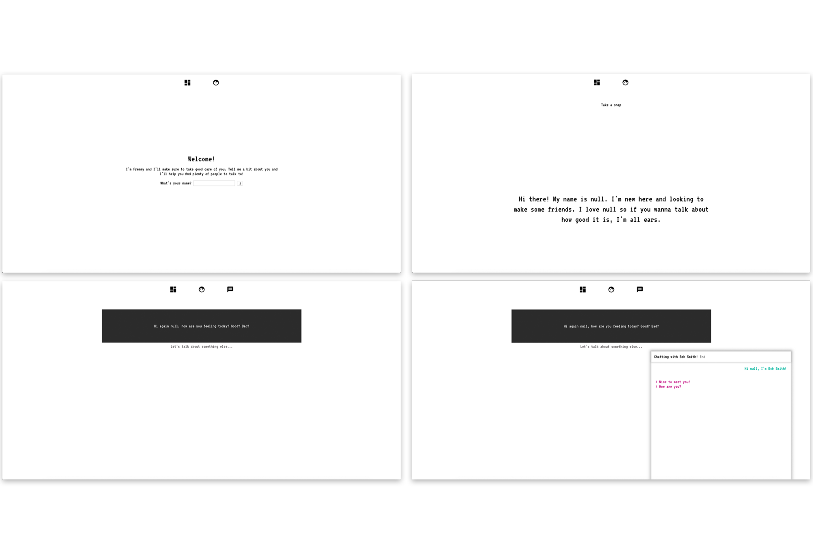

Assets
Canada 150
2014, digital (Illustrator), print
Canada 150 is a logo created for the celebration of Canada’s 150th anniversary. It combines two of the most well known Canadian symbols—the maple leaf and the moose—into a simple, organic shape. The oldstyle numerals point towards the (old) age of the country while assimilating itself into the logo through the type’s roundness. The typography clarifies the purpose of the logo, but is not necessary in order for the viewer to recognize what it is representing. The red as the main colour was an obvious choice, particularly since it references the canadian flag. The logo was meant to be flexible, both in colour and application.

Commercial Type Poster
2016, digital, print (InDesign)
The mandate was to design a poster for a typography talk by Christian Schwartz at the Department of Design and Computation Arts, Concordia University in March, 2016. The 24 in x 36 in poster needed to use Commercial Type foundry fonts and only two printing colours. The colour choice and layout were inspired by the Commercial Type website, which uses blue and black as its primary colours and the different typefaces are presented in a condensed, in-your-face manner. The title of the talk “It’s not just about the money, It’s not just about the art” is the enhanced by the use of repetition and the type choice creates a texture that is visible even at a distance.

Wedding Invitation
2017, print (InDesign, Illustrator)
The mandate was to design a wedding invitation, an information piece and the RSVP piece for guests to send back. It was important to take into the account a restricted budget for the 90 sets needed; as such, the invitations needed to be simple and easy to print. As canadian immigrants, the couple requested that their previous homes be represented in the invitation. With this in mind, I decided to show the capitals of their previous countries (Bogota, Colombia and Paris, France) through silhouettes of well-known structures of both cities that are connected by a bridge where the couple is standing, ready to wed. These silhouettes are composed of three different vector stock purchased and then edited by me.

Intrusive Advertisment
2017, digital (HTML, CS, JS / Atom, GitHub)
Browsing the internet has become an almost unbearable experience without an adblock extension or browser. Reading articles or visiting small blogs (or even going through your facebook feed) can become so frustrating because of intrusive advertising that instead of incentivizing users to continue browsing or look further into the subject of the ad, it makes them leave and turn to different websites that will provide a better user experience. Intrusive advertising isn’t only annoying for the user, it can sometimes completely render websites unreachable or unusable, particularly on mobile when an ad redirects to a different page or covers the whole screen with an impossible-to-close ad. I wanted to create a website that would explain what intrusive advertising is, the different types of intrusive advertising, why people use adblock, the effects of adblock, and the effectiveness of non-intrusive advertising.

Material Turn
2017-2018, digital, print (InDesign)
The goal was to design a catalogue for The Material Turn, an art exhibition organized by Kelly Thompson and WhiteFeather Hunter and presented by the FOFA Gallery. The exhibition was based on The Material Project, which focused on the theme of materializing data through textiles. The primary use of the catalogue was to showcase the different pieces that twelve artists had created through their participation in the project, which meant that the focus of the layout needed to be on the images. The catalogue also needed to work for both print and digital viewing and had a restricted budget. The typographic treatment pointed directly towards the digital aspect of the project, while the line pattern was a more subtle combination of both the digital and the material aspect—it represented the many threads that create a textile.

Fremmy
2018, digital (HTML, CS, JS / Atom, GitHub)
Fremmy was inspired by one of the hypothetical scenario presented by Pippin Barr in his DART450 course: “Social media - one could imagine a webpage that extends on the idea of "social media" by extending it to a near-future vision of webpages/sites that serve as our friends in the absence of real world interactions with other humans.” This lead me to think about the negative impacts of social media on our interpersonal relationships and the control they have over their users because of how consumed people become over their online persona.
I wanted to create a website and experience that would criticize the use of social media and its interference in interpersonal relationships. Fremmy enables and encourages the user to provide information about themselves through a “humanized” user-experience. It then uses the information gathered to create a profile for the user and “help" them connect with people who have similar interests or opinions. Fremmy itself becomes your friend. The name Fremmy came about because it felt fitting to use a catchy phonetic reference to the words friends, enemies and frenemies.
